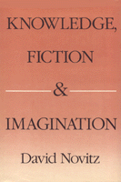

<body bgcolor="#FFFFFF" text="#000000" link="#0000FF" vlink="#CC0000" alink="#CC0000"><center><hr width="350" size="1" align="center" noshade>A highly original case that fiction is a reliable source of knowledge about the world<hr width="350" size="1" align="center" noshade><p><a href="https://cdcshoppingcart.uchicago.edu/Cart/ChicagoBook.aspx?ISBN=9780877224808&&PRESS=temple" target="_top">Buy this book!</a> | <a href="https://cdcshoppingcart.uchicago.edu/Cart/Cart.aspx?PRESS=temple" target="_top">View Cart</a> | <a href="https://cdcshoppingcart.uchicago.edu/Cart/Cart.aspx?PRESS=temple" target="_top">Check Out</a></p><p></p></center><!--none//--><h1>Knowledge, Fiction, and Imagination</h1>
<h3>David Novitz</h3>
<P>cloth 0-87722-480-3 $39.95, Sep 87, <FONT COLOR=#990033>Out of Print</FONT>
<BR> 280 pp
</P><BLOCKQUOTE><I>"This is an original, well presented and valuable contribution to the philosophy of literature. It will be of considerable interest to aestheticians; historians of literature, literary critics, and philosophers of literature. Professionals will appreciate it and educated laymen will learn from it."</I>
<br>&#151<b>Laurent Stern</b>, Rutgers University<I></I></BLOCKQUOTE>
<p>David Novitz makes a convincing and highly original case that fiction is a reliable source of knowledge about the world. Challenging contemporary literary theory as well as traditional epistemology, Novitz constructs a "romantic epistemology" according to which the fanciful imagination plays a crucial role in the acquisition and growth of empirical knowledge. While undeniably romantic, this epistemology does not lead to the romantic excesses of idealism and Derridean textualism, but is shown to be compatible both with realism and with the determinacy of textual meaning.
<p>By exploring the use of metaphor in imaginative literature, David Novitz defends his theory and adds importantly to our understanding of metaphor and the way it works. In so doing, he attempts to "restore literature to its former status as a functional object&#151allowing that a thing of beauty may indeed instruct, and that it may do so in ways which are richer and more varied than the empirical sciences."
<BR>&nbsp;<h2>Reviews</h2>
<p><I>"[This] book covers a great deal of ground and contains many interesting ideas and themes. [Novitz] begins with an excursion into romantic theory and ends by offering an account of culture and cultural identity.... This is a highly readable and sophisticated book which nobody seriously interested in the philosophy of literature can afford to ignore."</I>
<br>&#151<b><I>Canadian Philosophical Review</I></b>
<BR>&nbsp;<H2>About the Author(s)</H2>
<P><b>David Novitz</b> is a Senior Lecturer in Philosophy at the University of Canterbury, New Zealand.</P>
<BR><H2>Subject Categories</H2>
<p><A HREF="/tempress/philosophy.html" TARGET="_top">Philosophy and Ethics</a>
<BR><A HREF="/tempress/literature.html" TARGET="_top">Literature and Drama</a>
</p>
<p align="center"><a href="https://cdcshoppingcart.uchicago.edu/Cart/ChicagoBook.aspx?ISBN=9780877224808&&PRESS=temple" target="_top">Buy this book!</a> | <a href="https://cdcshoppingcart.uchicago.edu/Cart/Cart.aspx?PRESS=temple" target="_top">View Cart</a> | <a href="https://cdcshoppingcart.uchicago.edu/Cart/Cart.aspx?PRESS=temple" target="_top">Check Out</a></p><p><font face="Arial" size="1"><a href="copyright.html" onMouseOver="window.status='Web Copyright Policy';return true;" onMouseOut="window.status=''" title="Web Copyright Policy">&copy;</a> 2015 <a href="http://www.temple.edu" target="new" onMouseOver="window.status='Link to Temple University home page';return true;" onMouseOut="window.status=''" title="Link to Temple University home page">Temple University</a>. All Rights Reserved. http://www.temple.edu/tempress/titles/481_reg.html</font></p>